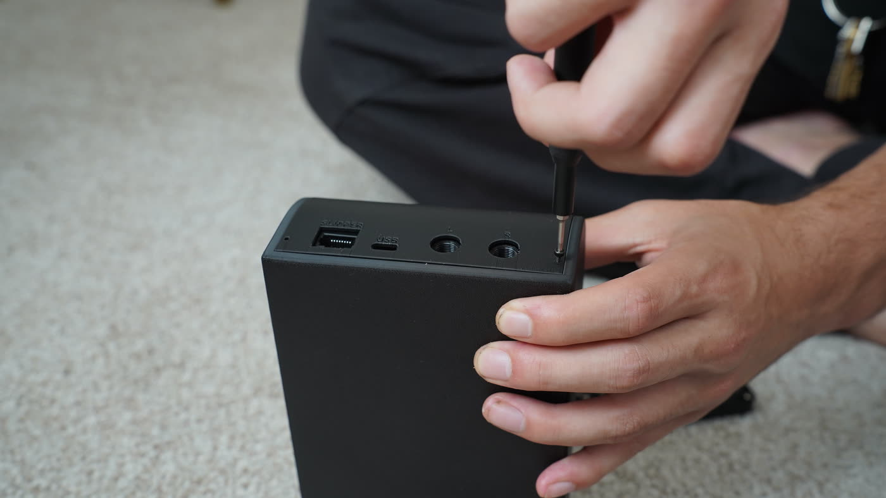
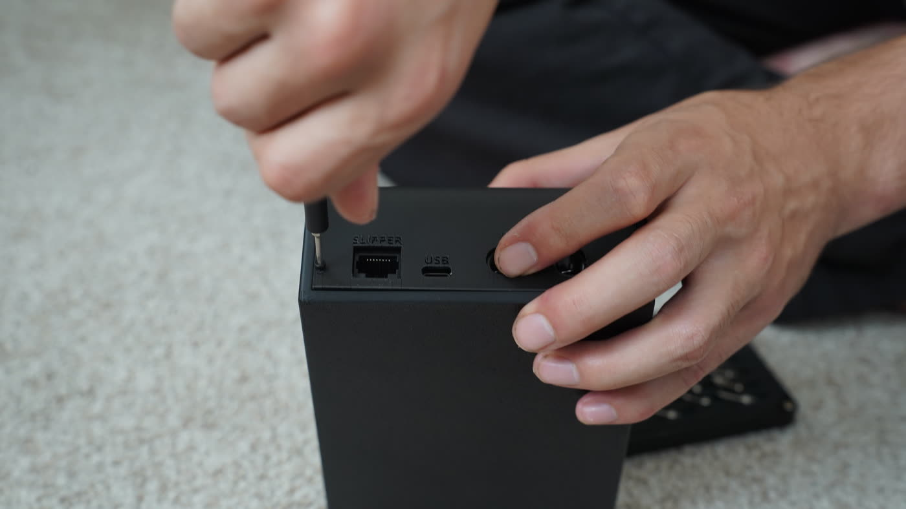
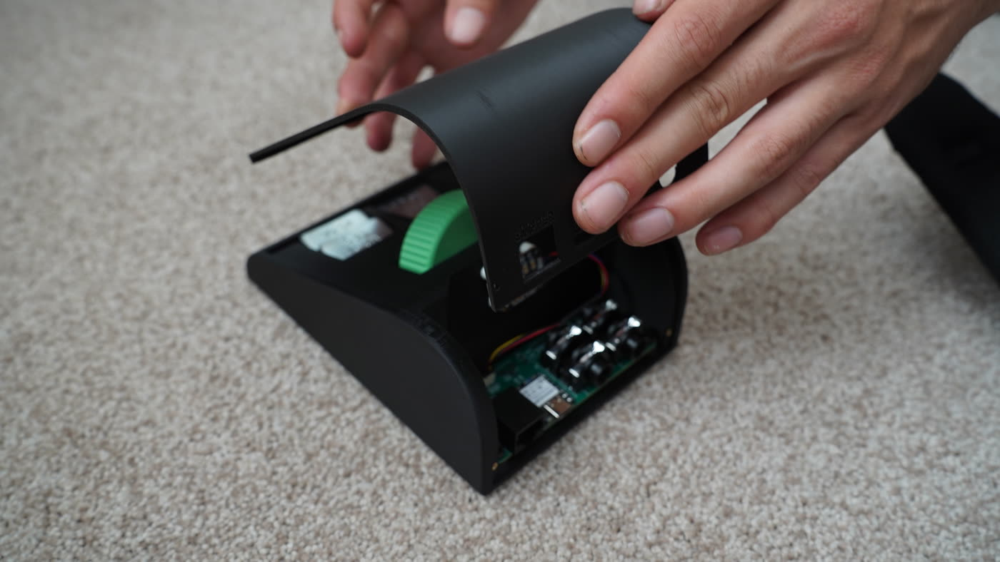
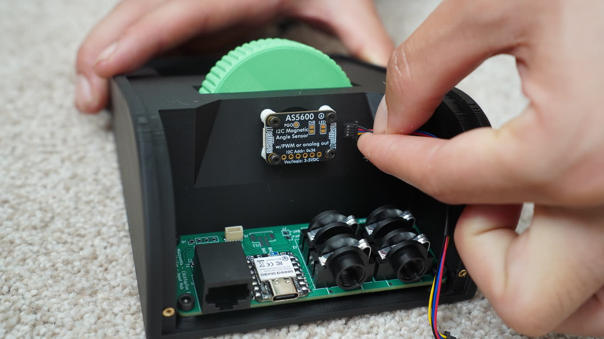
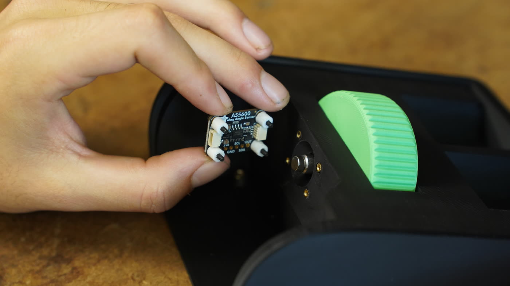
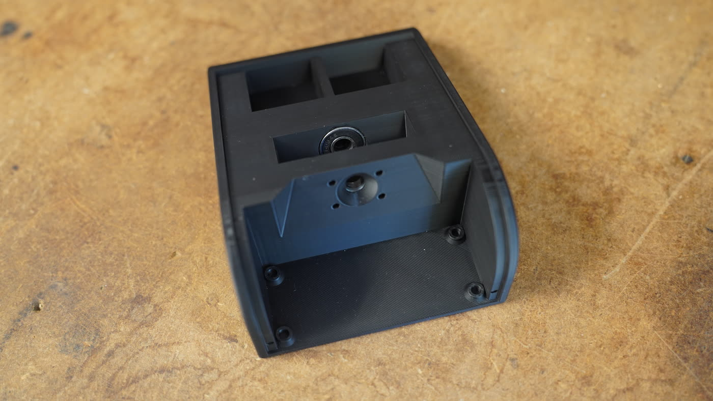

Clean and adjust the scroll wheel
Use this guide if the wheel rubs, sticks, or has debris in its slot. The assembly photos show where each part sits as you take apart the hub.
Tools
A small wrench, 1.5 mm and 2.5 mm hex drivers, small pliers, a soft brush, and a dry lint-free cloth.
Step 1 Remove the pedal jack nuts


- Unplug the USB cable first, then disconnect both pedals and the slipper. Take any loose weights out of their pockets before tipping the hub.
- Use a small wrench to loosen the two nuts on the L and R pedal jacks. Finish unscrewing them by hand and set them aside.
Step 2 Remove the rear cover



- Use the 1.5 mm hex driver to remove the two M2 × 4 mm screws at the lower corners of the rear cover.
- Lift the curved cover out of its side rails to expose the controller board and magnetic scroll sensor.
Step 3 Disconnect and remove the sensor



- Grip the plastic plug on the side of the sensor board and gently unplug it.
- Support the sensor board while removing its four M2 × 8 mm screws with the 1.5 mm hex driver. Lift the board away and set it aside with its four spacers.
Step 4 Remove the shaft and wheel


- Turn the wheel until you can reach the set screw in the tread. Use the 2.5 mm hex driver to back it out far enough to release the shaft.
- Use small pliers to grip the exposed metal shaft beside the magnet and pull it straight out toward the open electronics bay. Keep the magnet on the shaft. If the shaft resists, check that the set screw has cleared it.
- Lift the wheel up and out of its slot.
Step 5 Clean the slot and check the bearings


- Brush debris out of the wheel slot. Wipe the wheel tread, shaft, and surfaces around the slot with a dry lint-free cloth.
- Check that both bearings sit squarely in their recesses. Turn each inner ring with a fingertip. It should turn smoothly without catching or feeling gritty.
- If a bearing still binds after cleaning around it, see the bearing installation step for the 608RS replacement size.
Step 6 Reassemble, adjust, and test


- Once everything is clean, reassemble in reverse order. Set the wheel in its slot and slide the shaft through both bearings and the wheel with the magnet facing the electronics bay.
- Center the wheel between the slot walls, then tighten the set screw. Spin the wheel by hand. If it rubs, loosen the screw, shift the wheel sideways on the shaft, and tighten again once it spins freely.
- Reinstall the four spacers and sensor board, then reconnect the sensor cable. Check that the magnet clears the sensor as it rotates. Fit the rear cover, reinstall its two screws, and snug the pedal jack nuts.
- Put any loose weights back in their pockets. Reconnect the pedals and slipper, then plug in USB. Check that the wheel scrolls in both directions and stops scrolling when the wheel stops.
If the wheel still binds or scrolls erratically, report what you found on GitHub.